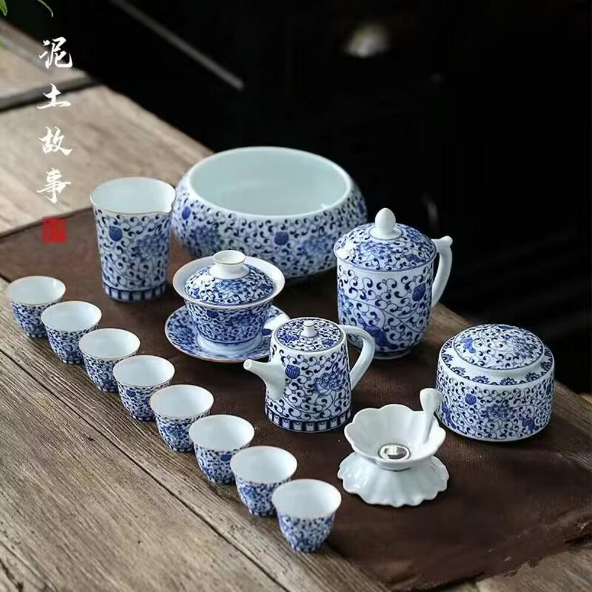

瓷器历史
景德镇素有“瓷都”之称，瓷器造型优美、品种繁多、装饰丰富、风格独特，以“白如玉，明如镜，薄如纸，声如磬”著称。其青花瓷、玲珑瓷、粉彩瓷、色釉瓷，合称景德镇四大传统名瓷。
景德镇瓷器的历史源远流长，其起源可以追溯到唐朝的唐代初期。当时，景德镇陶业开始逐渐发展，制作出最早的瓷器，从而成为中国陶瓷业的一个重要发源地。随着历史的推进，景德镇瓷器历经多个朝代的演变和发展，包括唐、宋、元、明、清等。在这些时期，瓷器的工艺、款式以及装饰等方面不断得到改进和创新，形成了各种具有独特风格的瓷器品种，如青花瓷、白瓷、粉彩瓷、五彩瓷等。特别是在明清两代，景德镇瓷器以其大规模和高水准的生产而闻名，成为当时中国陶瓷业的标志性产品。这一时期的景德镇瓷器不仅在数量和质量上有显著增长，而且在装饰和制造技术上也取得了重大突破，达到了非常高的艺术和技术水平。此外,景德镇瓷器在国际上也享有一定的声誉,它是中国文化的象征和代表之一。
